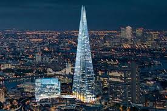

The Shard,[a] also referred to as the Shard of Glass,Shard London Bridge[10] and formerly London Bridge Tower,is an 87-storey skyscraper in Southwark, London, that forms part of the London Bridge Quarter development. The Shard's construction began in March 2009; it was topped out on 30 March 2012[14] and inaugurated on 5 July 2012. Practical completion was achieved in November 2012. The tower's privately operated observation deck, the View from the Shard, was opened to the public on 1 February 2013. Standing 309.6 metres (1,016 ft) high, the Shard is currently the joint 92nd tallest building in the world [18] and the fourth tallest building in Europe and the tallest building in the European Union.[19] It is also the second-tallest free-standing structure in the United Kingdom, after the concrete tower at the Emley Moor transmitting station.[20] The glass-clad pyramidal tower has 72 habitable floors, with a viewing gallery and open-air observation deck on the 72nd floor, at a height of 244.3 metres (802 ft).[4][21] It was designed by the Italian architect Renzo Piano and replaced Southwark Towers, a 24-storey office block built on the site in 1975. The Shard was developed by Sellar Property Group on behalf of LBQ Ltd, and is jointly owned by Sellar Property and the State of Qatar..
In 1998, London-based entrepreneur Irvine Sellar and his then partners decided to redevelop the 1970s-era Southwark Towers following a UK government white paper encouraging the development of tall buildings at major transport hubs. Sellar flew to Berlin in the spring of 2000 to meet the Italian architect Renzo Piano for lunch. According to Sellar, Piano spoke of his contempt for conventional tall buildings during the meal, before flipping over the restaurant's menu and sketching a spire-like sculpture emerging from the River Thames.[22] In July 2002, the then-Deputy Prime Minister, John Prescott, ordered a planning inquiry after the development plans for the Shard were opposed by the Commission for Architecture and the Built Environment and several heritage bodies, including the Royal Parks Foundation and English Heritage.[23][24] The inquiry took place in April and May 2003,[11][25] and on 19 November 2003, the Office of the Deputy Prime Minister announced that planning consent had been approved.[26] The government stated that:

In late 2007, the gathering uncertainty in the global financial markets sparked concerns about the viability of the Shard. However, in January 2008, Sellar announced that it had secured funding from a consortium of Qatari investors, who had paid £150 million to secure an 80% stake in the project. The consortium included Qatar National Bank, QInvest, Qatari Islamic Bank and the Qatari property developer Barwa Real Estate, as well as Sellar Property. The deal involved a buyout of the Halabi and CLS Holdings stakes, and part of the Sellar Property stake.

| Name | Move in Date | Website address |
|---|---|---|
| Joe Bloggs | 1 April 2014 | AbsolutVodka.com |
| Homer Simpson | 4 July 2014 | Duff.com |
| Hacky Sacky Restaurant | 23 April 2015 | Hackysacky.co.uk |
| Stephen Fry | 1 April 2014 | qi.com |